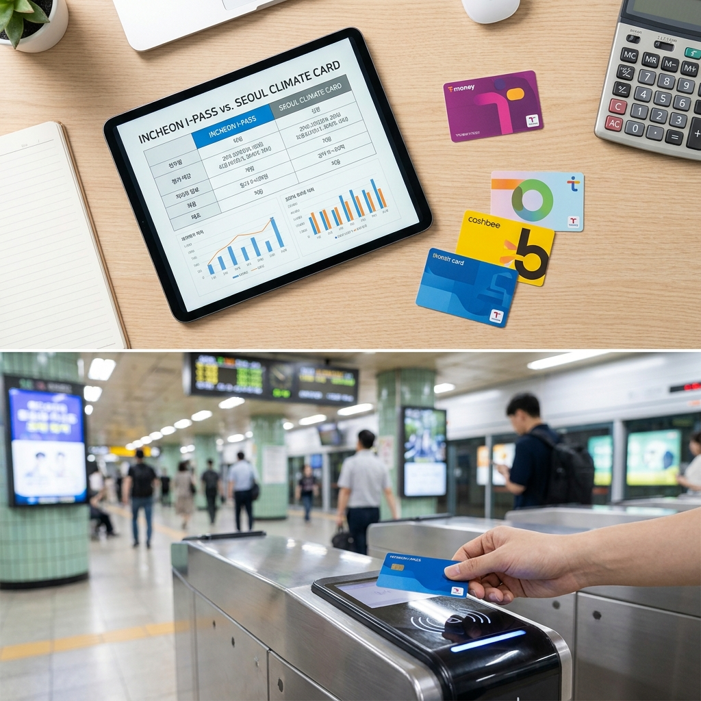

인천 I-패스 vs 기후동행카드 인천 출퇴근 직장인 요금 비교 — 월 대중교통 이용 횟수별 손익분기 계산표
인천에 거주하며 서울로 출퇴근하는 직장인의 경우, 광역버스를 타거나 월 대중교통 지출액이 8만 원 미만이면 무제한 20~30% 환급을 받는 인천 I-패스가 절대적으로 유리합니다.
반면 광역버스를 타지 않고 서울 지하철과 시내버스만 월 45회 이상 집중 이용하며 서울 시내 이동이 잦은 경우에는 월 6만 2천 원 정액권인 기후동행카드가 유리합니다.
특히 인천 I-패스는 정부 K-패스를 기반으로 하여 이용 횟수 60회 한도가 없고 청년 연령도 만 39세까지 30% 환급율이 적용되므로 대부분의 인천 통근자에게 실질 절감액이 더 큽니다.
내 실제 출퇴근 교통수단(광역버스 vs 지하철)과 월 이용 횟수에 따른 손익분기점을 아래 계산표를 통해 즉시 확인해 보세요.

인천과 서울을 오가는 대중교통 환승 시스템과 교통비 절감을 위한 카드 비교 분석 / AI 제작 이미지
01 | 인천 거주 서울 출퇴근 직장인의 대중교통 카드 고민 핵심 요약
수도권 대중교통 요금 인상 이후 매달 10만 원 안팎으로 치솟은 출퇴근 교통비는 직장인들의 큰 고정 지출 부담이 되었습니다.
현재 수도권 통근자들에게 가장 주목받는 제도는 국토교통부 기반의 '인천 I-패스(K-패스 인천형)'와 서울시의 무제한 대중교통 정기권인 '기후동행카드'입니다.
인천에서 서울로 출퇴근하는 직장인은 거주지가 인천이면서 주 활동 무대가 서울이기 때문에 두 카드 중 어떤 것을 써야 할지 혼란을 겪는 경우가 많습니다.
결론부터 말씀드리면, "광역버스(빨간버스) 탑승 여부"와 "월 이용 횟수" 두 가지 기준만 확인하면 본인에게 딱 맞는 카드가 명확하게 갈립니다.
두 제도는 운영 방식이 '사후 환급형(I-패스)'과 '선불 정액권(기후동행카드)'으로 완전히 다르므로 본인의 이동 패턴을 정밀하게 대입해 보아야 손해를 보지 않습니다.
02 | 인천 I-패스 환급 제도와 주요 혜택 및 신청 자격
인천 I-패스는 정부의 전국 단위 교통비 환급 사업인 'K-패스'를 인천광역시민의 통근 특성에 맞춰 대폭 확대한 제도입니다.
주민등록상 주소지가 인천광역시에 등록된 만 19세 이상 시민이라면 누구나 별도의 신규 카드 발급 없이 기존 K-패스 전용 카드로 자동 적용됩니다.
기존 정부 K-패스가 월 15회 이상 최대 60회까지만 환급을 제공하는 반면, 인천 I-패스는 월 60회 초과 이용분에 대해서도 횟수 제한 없이 무제한 환급을 제공하는 것이 가장 큰 강점입니다.
환급 비율은 일반 성인 20%, 청년(만 19~39세) 30%, 65세 이상 어르신 30%, 저소득층 53.3%에 달합니다.
특히 일반 K-패스의 청년 기준이 만 34세인 반면, 인천 I-패스는 만 39세까지 30% 청년 혜택을 연장 적용하여 30대 직장인들에게 막대한 혜택을 제공합니다.
03 | 서울시 기후동행카드 권종별 가격과 인천 구간 적용 범위
기후동행카드는 30일간 일정 금액을 충전하면 서울 시내 대중교통을 횟수 제한 없이 무제한으로 탑승할 수 있는 정기권입니다.
권종은 따릉이 제외 62,000원권과 따릉이 포함 65,000원권으로 나뉘며, 청년(만 19~39세)의 경우 7,000원 할인된 55,000원 / 58,000원에 이용할 수 있습니다.
그러나 인천 거주자 입장에서 기후동행카드를 쓸 때 가장 주의해야 할 점은 '노선 적용 범위의 한계'입니다.
서울 시내버스 및 서울 관내 지하철역에서는 자유롭게 승하차가 가능하지만, 인천 관내 역의 경우 인천 1·2호선 및 인천 관내 시내버스는 전면 적용 대상에서 제외됩니다.
서울 지하철 7호선(석남~까치울 구간)과 공항철도(인천공항~계양 구간) 등 일부 서울시 협약 구간에서만 승차가 가능하며, 일반적인 인천 광역버스는 기후동행카드로 탑승할 수 없습니다.
수도권 전철 게이트 통과 시 적용 노선과 환승 혜택을 확인하는 스마트 출퇴근 모습 / AI 제작 이미지
04 | 인천 I-패스 vs 기후동행카드 주요 이용 조건 및 혜택 비교표
두 제도의 핵심적인 차이점을 한눈에 비교하실 수 있도록 아래 표로 완벽하게 정리했습니다.
| 비교 항목 |
인천 I-패스 (K-패스 인천형) |
서울 기후동행카드 |
| 기본 방식 |
사후 환급형 (신용 청구차감 / 체크 계좌입금) |
선불 충전 정기권 (30일권) |
| 이용 요금 |
쓴 만큼 결제 후 환급 (기본요금 없음) |
월 62,000원 (따릉이 미포함 기준) |
| 환급율 및 혜택 |
일반 20% / 청년·어르신 30% / 저소득 53.3% |
정액 충전 후 서울 대중교통 무제한 탑승 |
| 청년 연령 기준 |
만 19세 ~ 34세 (30% 환급) |
만 19세 ~ 39세 (55,000원으로 7천원 할인) |
| 월 이용 횟수 한도 |
무제한 (월 15회 이상 이용 시 상한 없음) |
무제한 (기간 내 무제한) |
| 광역버스 적용 여부 |
전국 광역버스 탑승 가능 (환급 적용) |
광역버스 탑승 불가 (별도 결제 필요) |
| 적용 지역 범위 |
전국 대중교통 (인천·서울·경기 및 전국) |
서울 시내 대중교통 중심 (인천 버스·지하철 대다수 제외) |
위 비교표에서 볼 수 있듯이, 인천 I-패스는 전국 단위의 모든 대중교통에서 환급이 되는 반면 기후동행카드는 철저하게 서울 시내 중심의 정액제입니다.
05 | 월 대중교통 이용 횟수별(20회·40회·60회) 실제 교통비 손익분기 계산표
인천에서 서울로 지하철을 이용해 통근하는 일반 직장인(편도 요금 약 1,700원 기준)을 가정한 실제 월 교통비 지출액 계산표입니다.
일반 성인(20% 환급)과 청년(30% 환급) 기준 각각 기후동행카드(일반 6.2만 원 / 청년 5.5만 원)와 비교해 보았습니다.
| 월 이용 횟수 |
총 교통비 원금 |
I-패스 일반 (20% 환급) |
I-패스 청년 (30% 환급) |
기후동행카드 (정액권) |
유리한 카드 판정 |
| 20회 (주 2~3회 출근) |
34,000원 |
27,200원 (실지출) |
23,800원 (실지출) |
62,000원 / 청년 5.5만 |
I-패스 압승 (3만 원 이상 절약) |
| 40회 (주 5회 기본 출퇴근) |
68,000원 |
54,400원 (실지출) |
47,600원 (실지출) |
62,000원 / 청년 5.5만 |
I-패스 우세 (7천~8천 원 절약) |
| 50회 (주 5회 + 주말 외출) |
85,000원 |
68,000원 (실지출) |
59,500원 (실지출) |
62,000원 / 청년 5.5만 |
기후동행카드 우세 (약 4천~6천 원 절약) |
| 60회 이상 (매일 잦은 이동) |
102,000원 |
81,600원 (실지출) |
71,400원 (실지출) |
62,000원 / 청년 5.5만 |
기후동행카드 압승 (2만 원 안팎 절약) |
계산 결과, 일반적인 주 5일 출퇴근(월 약 40~44회)만 하는 직장인이라면 인천 I-패스를 쓰는 것이 기후동행카드보다 실부담액이 더 적습니다.
반면 주말에도 서울에서 활동하거나 외근이 잦아 월 대중교통 탑승 횟수가 50회를 훌쩍 넘는다면 기후동행카드가 유리해지기 시작합니다.
06 | 광역버스(빨간버스) 및 신분당선 이용자의 필승 카드 선택법
만약 출퇴근 시 광역버스(M버스, 직행좌석버스, 광역급행버스)를 타는 분이라면 계산할 필요도 없이 무조건 인천 I-패스를 선택하셔야 합니다.
기후동행카드는 기본적으로 광역버스 탑승이 불가능하며, 카드를 태그하더라도 인식이 되지 않거나 일반 잔액이 차감되지 않아 별도의 카드를 찍어야 합니다.
광역버스는 편도 요금이 3,000원에 달하기 때문에 한 달 왕복 40회만 타도 12만 원의 교통비가 발생합니다.
이때 인천 I-패스를 사용하면 일반 성인은 24,000원(20%), 청년은 무려 36,000원(30%)을 현금으로 계좌에 환급받게 됩니다.
또한 신분당선이나 수도권 광역급행철도(GTX) 역시 기후동행카드 적용이 제한되지만 I-패스는 환급 대상에 포함되므로 고액 요금 노선 이용자에게는 I-패스가 정답입니다.
07 | 청년 연령 기준과 어르신 혜택 비교 (I-패스 만 39세 vs 기후동행 만 39세)
두 제도 모두 청년 세대의 교통비 절감을 위해 혜택을 대폭 강화해 두었습니다.
고무적인 점은 두 제도 모두 청년의 연령 기준을 '만 19세부터 만 39세까지'로 동일하게 넓혀 두었다는 점입니다.
만 35세~39세 사이의 직장인들은 일반 전국 K-패스(만 34세 한도)에서는 청년 혜택에서 탈락하지만, 인천 I-패스에서는 30%의 환급율을 온전히 보장받습니다.
또한 인천 I-패스는 65세 이상 어르신에게도 30%의 환급 혜택을 신설하여 제공하고 있습니다.
지하철은 무임 승차를 하시더라도 시내버스나 광역버스를 이용하실 때 30% 환급이 적용되므로 어르신들의 버스 요금 부담을 크게 덜어줍니다.
08 | 인천 출퇴근 직장인 유형별 최적 교통카드 결정 체크리스트
복잡한 고민을 한 번에 끝낼 수 있도록 통근 유형별 최종 선택 가이드를 제시해 드립니다.
🎯 나에게 맞는 교통카드 3초 판별 체크리스트
1. 유형 A: 출퇴근 시 광역버스(M버스, 직행버스)를 1회라도 탄다
👉 선택: 인천 I-패스 100% 확정 (기후동행카드는 광역버스 탑승 불가)
2. 유형 B: 광역버스는 안 타고, 지하철만 주 5일 딱 출퇴근한다 (월 40~44회)
👉 선택: 인천 I-패스 유리 (기후동행 6.2만 원보다 I-패스 실지출 4.7만~5.4만 원이 더 저렴)
3. 유형 C: 서울 지하철 7호선이나 공항철도로 진입하며, 서울 시내 외근·약속이 많다 (월 50회 이상)
👉 선택: 기후동행카드 유리 (월 50회 이상부터는 정액 무제한 혜택이 손익분기 돌파)
4. 유형 D: 인천 시내버스 및 인천 지하철 1·2호선 환승이 필수적이다
👉 선택: 인천 I-패스 필수 (기후동행카드는 인천 시내버스와 인천 1·2호선 사용 불가)
대부분의 인천 시민은 인천 시내버스 환승이나 광역버스 이용이 필수적이므로 80% 이상의 이용자에게 인천 I-패스가 정답입니다.
09 | 카드 발급 및 K-패스 앱 등록 절차와 환급금 수령 팁
인천 I-패스를 이용하는 방법은 매우 간단합니다. 기존에 K-패스 전용 카드를 갖고 계신 분은 아무것도 새로 하실 필요가 없습니다.
신규 이용자라면 신한, 국민, 삼성, 현대, 우리, 하나, 농협, 기업, BC 등 주요 카드사에서 'K-패스 전용 신용카드 또는 체크카드'를 발급받으세요.
카드를 수령하신 후 스마트폰에 K-패스 공식 앱을 설치하고 회원가입을 진행합니다.
회원가입 시 본인 인증 과정에서 주민등록번호를 통해 인천광역시 거주 사실이 자동으로 확인되면 즉시 '인천 I-패스' 혜택이 적용됩니다.
환급금은 신용카드의 경우 다음 달 청구 대금에서 자동 차감되며, 체크카드는 등록된 결제 계좌로 약속된 정산일에 현금 캐시백으로 입금됩니다.
#인천아이패스
#기후동행카드
#K패스환급
#인천출퇴근교통비
#대중교통할인
#교통카드비교
#광역버스할인
#직장인교통비절약
#기후동행카드인천
#대중교통손익분기